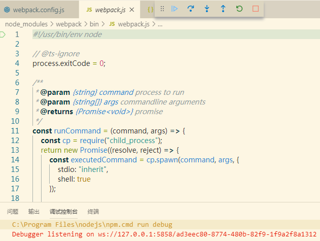
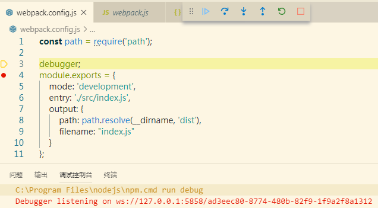
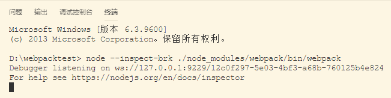
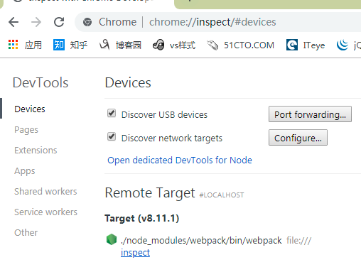
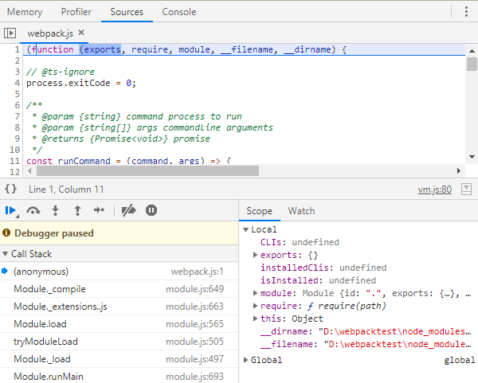
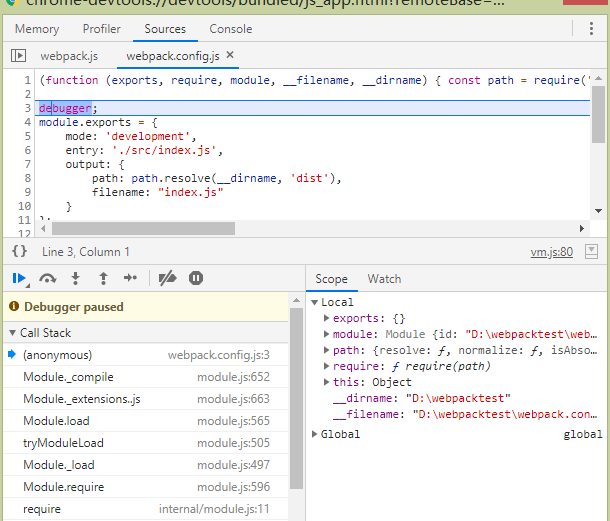

原文连接:https://www.cnblogs.com/yfrs/p/webpackdebug.html
调试webpack
1. 摘要
用过构建工具webpack的朋友应该都体会，面对其几百行的配置内容如大海一小舟，找不到边。看文档查百度，对其构建的生命周期看了又看。最终还是很茫然。原因很简单，构建配置一般都是通过脚手架工具自动生成。看似每天在用，其实接触很少。直到有一天，发现社区的插件不能满足需求时，相信你一定会定制一个自己的插件。这时你需要彻底了解它的机制，作为开发，调试代码一定是了解内部逻辑最好的方法。原文公众号地址
不管是 npm 还是 webpack 都是基于nodejs的工具。所以最终是调试node。这里我介绍三种调试的方法。需要提前准备好以下工具
- vscode
- google chrome
使用npm初始一个项目命名为webpacktest。需要源码的朋友可关注公众号小院不小,回复 webpackdebug。安装项目依赖
npm i -D webpack webpack-cli添加webpack配置文件,并在其中使用debugger设置一个断点。
const path = require('path');
debugger;
module.exports = {
mode: 'development',
entry: './src/index.js',
output: {
path: path.resolve(__dirname, 'dist'),
filename: "index.js"
}
};2. (方法一)使用vscode运行npm调试
在新建项目的package.json文件scripts项中添加一个key为debug的配置，内容如下
...
"scripts": {
"build": "webpack",
"debug": "node --inspect-brk=5858 ./node_modules/webpack/bin/webpack"
}
...vscode中选择调页签，在左上角调试的下拉框中选择添加配置，选择Node环境。vscode会自动生成一个 launch.json 文件，将文件的内容调整为以下内容
{
"version": "0.2.0",
"configurations": [
{
"type": "node",
"request": "launch",
"name": "build",
"stopOnEntry": true,
"runtimeExecutable": "npm",
"runtimeArgs": [
"run",
"debug"
],
"port": 5858
}
]
}其中端口配置需要和inspect-brk配置的端口保持一致。stopOnEntry表示在运行的第一行代码中添加断点,点击开始调试按钮，即可进入如下界面

继续点击运行，即可进入配置文件设置的断点

其中左边的小红点是，直接在vscode中添加的断点。此断点也可中断。
3. (方法二)使用vscode运行node调试
我们细看在package.js文件中配置的调试脚本，其实是运行node，所以就想是否可以不通过npm直接运行。经过测试，确实是可以的。回到我们launch.json文件，将配置文件改为如下
{
"version": "0.2.0",
"configurations": [
{
"type": "node",
"request": "launch",
"name": "Node",
"stopOnEntry": true,
"program": "${workspaceFolder}/node_modules/webpack/bin/webpack"
}
]
}点击开始调试, 依然可得到方法一中一样的调试结果。通过这种方式，没有package.json文件的约束。更简单也减少了错误的几率。
4. (方法三)命令行结合Chrome调试
在命令行中输入命令 node --inspect-brk ./node_modules/webpack/bin/webpack，为了方便，我们这还是使用vscode，运行效果如下

打开chrome浏览器，在地址栏输入 chrome://inspect/#devices,在界面中点击inspect,此时熟悉的界面就出来了，和平时调试前端一样。显示如下

点击后，便可进入断点，如下

在点击下调试按钮，可进入我们在配置文件中设置的断点

5. 总结
在以前就配置过调试webpack,时间久了就忘了，这次突然有需求了又查了好久资料。想想了想，还是总结分享出来。做开发，每天接触的多，还是要多写。
若仔细看文章的朋友，所谓三个方法都是围绕命令 node --inspect-brk ./node_modules/webpack/bin/webpack .我在查询资料时，最初得到的命令是 node --inspect-brk ./node_modules/.bin/webpack,这命令会出现错误。
欢迎感兴趣的朋友关注我的微信订阅号"小院不小"，或者点击下方的二维码关注。我将多年开发中遇到的难点，以及一些有意思的功能，体会都会一一发布到我的订阅号中。需要本文demo可以在公众号中回复webpackdebug
闲来无事，采用cocos creator开发了一个小游戏，感兴趣的朋友一个可以来玩玩
有喜欢聊技术朋友也欢迎入群，若二维码失效可加我微信回复前端